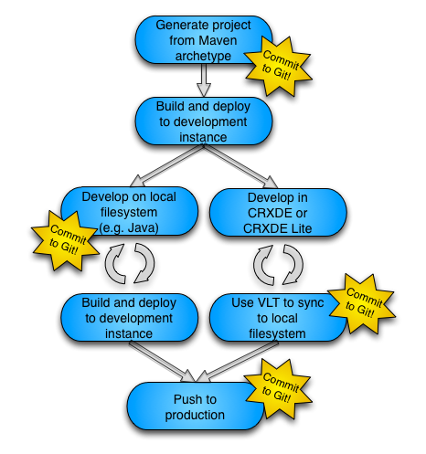
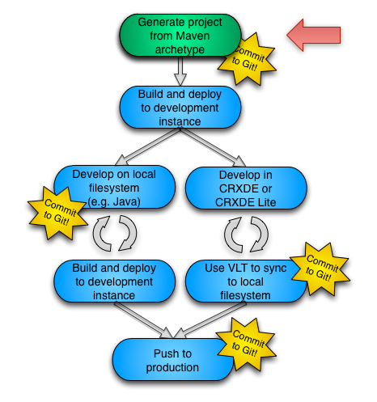
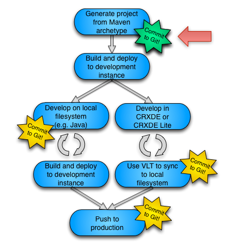
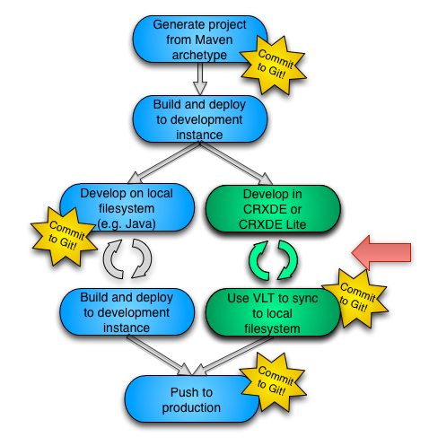
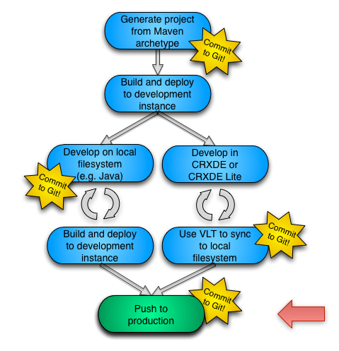

CQ Maven Methods
CQCon 2013
Hello World
I'm Andrew.
Joined Adobe in November 2012
CQ Newbie
JCR/CMS/TLA old hat
Background in Open Source, Content Management, Mobile
Talking today about what I learned so far...
Fork me!
If you found this talk useful, or spotted mistakes:
github.com/savs/CQCon_2013_CQ_Maven_Methods
In your browser
http://andrewsavory.com/presentations/CQCon_2013_CQ_Maven_Methods/index.html
See also


Let's build a CQ site

... uh, where to begin?
Method 1
Enthusiastically rush in, use CRXDE Lite
Method 2
I'm a guru, I use Eclipse and CRXDE
Method 3
I'm a ninja, I use emacs and vlt
Method 4
I'm a guru ninja, I use vi and curl
Method 5

See also: http://xkcd.com/378/ – Real Programmers
But what about ...
reverting mistakes?
reproducible builds?
collaborating with others?
deploying to production?
Why isn't it easier to build a CQ site?
Laborious project inception
No two projects alike
Don't know project layout
Don't know project dependencies
Hard for others to reproduce
Hard to test
Lengthy RTFM or worse (no FM)
Documentation over convention
CQ SUCKS
$PRODUCT SUCKS
YOUR METHODOLOGY SUCKS
(sorry)
So how do we fix this?
Maven
Git
(or Subversion, or CVS ... ymmv)
Best Practices
Maven
“Maven is a software project management and comprehension tool. Based on the concept of a project object model (POM), Maven can manage a project's build, reporting and documentation from a central piece of information.”
Git
“Git is a free and open source distributed version control system designed to handle everything from small to very large projects with speed and efficiency. ”
Version control is a system that records changes to a file or set of files over time so that you can recall specific versions later.
Best Practices
“A best practice is a method or technique that has consistently shown results superior to those achieved with other means.”
In addition, a "best" practice can evolve to become better as improvements are discovered.
What do we want?
Minimal customisation
Standardised way to create a project
Standardised way to build a project
Standardised way to deploy a project
Standardised way to test a project
Standardised way to share a project
Our target
Success criteria:
It's EASY to build a CQ site!
Getting started
Install Maven: http://maven.apache.org/guides/getting-started/
Install Git: http://git-scm.com/book/en/Getting-Started-Installing-Git
Configuring Maven
- Maven has a settings file that defines things like repositories where plugins can be downloaded (typically
~/.m2/settings.xml). - We need to add a profile to point to the Adobe repository.
- We then specify this repository when we use the archetype plugin.
Configuring Maven
<profile>
<id>adobe-public</id>
<activation>
<activeByDefault>false</activeByDefault>
</activation>
<properties>
<releaseRepository-Id>adobe-public-releases</releaseRepository-Id>
<releaseRepository-Name>Adobe Public Releases</releaseRepository-Name>
<releaseRepository-URL>http://repo.adobe.com/nexus/content/groups/public</releaseRepository-URL>
</properties>
<repositories>
<repository>
<id>adobe-public-releases</id>
<name>Adobe Basel Public Repository</name>
<url>http://repo.adobe.com/nexus/content/groups/public</url>
<releases>
<enabled>true</enabled>
<updatePolicy>never</updatePolicy>
</releases>
<snapshots>
<enabled>false</enabled>
</snapshots>
</repository>
</repositories>
<pluginRepositories>
<pluginRepository>
<id>adobe-public-releases</id>
<name>Adobe Basel Public Repository</name>
<url>http://repo.adobe.com/nexus/content/groups/public</url>
<releases>
<enabled>true</enabled>
<updatePolicy>never</updatePolicy>
</releases>
<snapshots>
<enabled>false</enabled>
</snapshots>
</pluginRepository>
</pluginRepositories>
</profile>
Configuring Maven
Enable the repository:
<activeProfiles>
<activeProfile>adobe-public</activeProfile>
</activeProfiles>
Or use the -P option to activate profile(s):
mvn -P adobe-public [...]
Using Maven
Starting a new project ...
... can sometimes feel like reinventing the wheel.
You are here
Archetypes
archetype |ˈɑːkɪtʌɪp|
noun
- a very typical example of a certain person or thing: he was the archetype of the old-style football club chairman.
- an original which has been imitated; a prototype: an instrument which was the archetype of the early flute.
Maven Archetypes
A prototype upon which others are
copied, patterned, or emulated.
What CQ archetypes are there?
- simple-content-package
- Generates a simple content package
- multimodule-content-package
- Includes the folder structure for developing a CQ application (content package and bundle).
- cqblueprints multi-module
- Third-party archetype encapsulating best practices for working with e.g. OSGi bundles, taglibs, and CQ content
See also: How to work with packages
On Packages
- Packages enable the importing and exporting of repository content. They are used to install new functionality, transfer content between instances, or back up the repository
- A package is a zip file in file system (vault) serialization format
- Packages include meta information - filter definitions, import configuration, package properties
- Packages are often managed through the CQ Package Manager
On Bundles
- Bundles are modular containers of functionality for OSGi – essentially a java module that contains application logic
- Bundles consist of java classes and other resources needed to deliver functionality or to provide services to other bundles.
- Bundles can be managed through the CQ Web Console
See also: Creating OSGi bundles using CRXDE
How to use an archetype
mvn archetype:generate
-DarchetypeGroupId=foo
-DarchetypeArtifactId=bar
-DarchetypeVersion=1.0.0
-DarchetypeRepository=baz
- archetypeGroupId: identifies the archetype project uniquely across all projects
- archetypeArtifactId: the name of the archetype jar without a version number
- archetypeRepository: where to get the archetype from (based on pluginRepository in settings.xml)
See also: Maven: Introduction to Archetypes and Maven: Naming conventions
Simple content package Archetype
From the fine manual:
“Creates a maven project that is suitable for installing resources for a simple CQ application. The folder structure is that used below the /apps folder of the CQ repository. The POM defines commands for packaging the resources that you place in the folders and installing the packages on the CQ server.”
Simple content package usage
mvn archetype:generate
-DarchetypeGroupId=com.day.jcr.vault
-DarchetypeArtifactId=simple-content-package-archetype
-DarchetypeVersion=1.0.1
-DarchetypeRepository=adobe-public-releases
- archetypeGroupId: com.day.jcr.vault
identifies the archetype project uniquely across all projects - archetypeArtifactId: simple-content-package-archetype
the name of the archetype jar without a version number - archetypeRepository: adobe-public-releases
where to get the archetype from (based on pluginRepository in settings.xml)
Simple content package in action
Simple content package parameters
- groupId: Like a package name, e.g. com.yourcompany.myproject
- artifactId: name of the jar without the version, e.g. myproject
- version: accept the default
- package: not used in simple-content-package
- appsFolderName: name of /apps/myproject, e.g. myproject
- artifactName: Description in Package Manager
- packageGroup: Group in Package Manager
See also: Maven: Naming conventions
Simple content package output
- Template directories
pom.xmlfile- Instructions for compiling, creating bundles, deploying to CQ in packages
- FileVault configuration files
Multimodule Content Package Usage
mvn archetype:generate
-DarchetypeGroupId=com.day.jcr.vault
-DarchetypeArtifactId=multimodule-content-package-archetype
-DarchetypeVersion=1.0.1
-DarchetypeRepository=adobe-public-releases
Multimodule content package output
${artifactId}
|- pom.xml
|- bundle
|- pom.xml
|- src
|- main
|- java
|- ${groupId}
|- SimpleDSComponent.java
|- test
|- java
|- ${groupId}
|- SimpleUnitTest.java
|- content
|- pom.xml
|- src
|- main
|- content
|- jcr_root
|- apps
|- ${appsFolderName}
|- config
|- install
|- META-INF
|- vault
|- config.xml
|- filter.xml
|- nodetypes.cnd
|- properties.xml
|- definition
|- .content.xml
cqblueprints multi-module Usage
- First add the CQ Blueprints Maven Repository to Maven's
settings.xml, then:
mvn -P cqblueprints archetype:generate -DarchetypeGroupId=com.cqblueprints.archetypes -DarchetypeArtifactId=multi-module -DarchetypeVersion=1.0.5 -DarchetypeRepository=cqblueprints.plugins.releases
- archetypeGroupID: com.cqblueprints.archetypes
- archetypeArtifactId: multi-module
- archetypeVersion: 1.0.5
- archetypeRepository: cqblueprints.plugins.releases
See also: Connecting to the CQ Blueprints Repository and The CQ Project Maven Archetype
cqblueprints multi-module output
${artifactId}
|- README
|- pom.xml
|- ${artifactId}-all
|- pom.xml
|- ${artifactId}-config
|- ${artifactId}-content
|- ${artifactId}-services
|- ${artifactId}-taglib
|- ${artifactId}-view
Why use cqblueprints multi-module?
“The things we wanted to consider with our archetype is to address concerns of larger teams”
The cqblueprint multi-module archetype is developed by headwire.com
CQBlueprints multimodule design
- foo-view subproject: where css/html/js developers (frontend) do their work
- foo-taglib foo-services: where java developers (backend) do their work
- foo-config: where the configuration (runmode configs stored)
- foo-content: how we get initial content and site structure onto the developer's box quickly
- foo-all: how we hand off builds to the next environment
Using Git
Why Git?
- Local safety net
- "The internet is my backup"
- It's good to share
- Enlightened self-interest
You are here
Git project setup
cd projectname git init
Git Ignore
Edit .gitignore, for example:
.classpath .project .vlt/ .settings/ target/
Get it in Git
git add * git commit -m 'Initial project version'
Get it in Github (optional)
cd project git hub-new-repo
hub-new-repo is a shortcut for creating a repository on github and pushing your local repo into it
See also: CLI remote github repo creation
See also: github
... time passes ...
Commit project
git add filenamesgit commit -m "meaningful message"git push origin master
(BEST) PRACTICE(S)
“the three great virtues of a programmer: laziness, impatience, and hubris”
You are here


Building

How can we build smarter?
Create local zips and jars that you can upload:
mvn package
produces:
- Content package output:
target/yourapp-content-1.0-SNAPSHOT.zip - Bundle output:
target/testapp-bundle-1.0-SNAPSHOT.jar
Deploying
How can we build and deploy smarter?
- Content package:
mvn -PautoInstallPackage install - Bundle:
mvn -PautoInstallBundle install
cqblueprints: mvn -Pauto-deploy install
Developing

You are here

How do we develop in a world of maven builds and deploys and git saves?
The FileVault tool
You can use the FileVault tool (vlt) to check in, check out, update and sync local content with the repository.
- Install: extract
crx-quickstart/opt/filevault/filevault.[tgz|zip]and add to your path - Usage:
vlt --credentials admin:admin co --force http://localhost:4502/crx
See also: How to use the VLT Tool
Sample development workflow
- Use maven to build and deploy
- Initialise
vlt - Create components, templates with CRXDE Lite
- Use
vltto copy back into local filesystem - Change locally
- Use
vltto copy back into the repository - Add to git
Demo
Testing
Continuous Integration?
- Jenkins with Git plugin, GitHub plugin
- Selenium as a server
- Cucumber for java with Jenkins plugin and tests in java
Production
How do we move to production in a world of maven builds and deploys and git saves?
You are here

<profile>
<id>auto-deploy-prod</id>
<properties>
<cq.host>server</cq.host>
<cq.port>4502</cq.port>
<cq.user>admin</cq.user>
<cq.password>admin</cq.password>
</properties>
</profile>
mvn -Pauto-deploy-prod install
Deployment profile
FIXME: need to find appropriate version for each archetype
<profiles>
<!-- profile for deployment to shared development instance -->
<profile>
<id>devDeploy</id>
<activation>
</activation>
<properties>
<depl.user><!-- {shared instance user} --></depl.user>
<depl.password><!-- {shared instance password} --></depl.password>
<depl.host><!-- {shared instance IP} --></depl.host>
<depl.port>4502</depl.port>
</properties>
</profile>
</profiles>
Putting it all together
0-60 in 5 pseudo lines
mvn archetype:generategit init; git add *; git commit -m "Initial project"mvn -PautoInstallPackage installvlt checkout ; vlt update ; vlt commitgit add; git commit; git push
Workflow
- Project inception: generate with archetype
- Put in git
- Create components, templates with CRXDE Lite
- Use vlt to keep in sync with local filesystem
- Put in git
- Use local filesystem to develop java/osgi bundles etc
- Put in git
- Use maven to build and deploy to test environment
- Use a test framework to make sure it works (but see next slides)
- Use maven to deploy to production (but see next slides)
Where next?
Integration Testing Framework
... see Lydia's talk
Deployment Testing
... see Bertrand's talk

Thank you. Questions?
Credits
- Light Bulb designed by Shane David Kenna from The Noun Project
- Question designed by Anas Ramadan from The Noun Project
- Hard Disk Drive designed by Eddie Alshehri from The Noun Project
- Time designed by wayne25uk from The Noun Project
- Sync designed by P.J. Onori from The Noun Project
- Sync designed by Rohith M S from The Noun Project
- Cloud Upload designed by Adam Whitcroft from The Noun Project
- Puzzle designed by John O'Shea from The Noun Project
- Question designed by Henry Ryder from The Noun Project
- Factory designed by Adrijan Karavdic from The Noun Project
- Crash Test Dummy designed by Luis Prado from The Noun Project